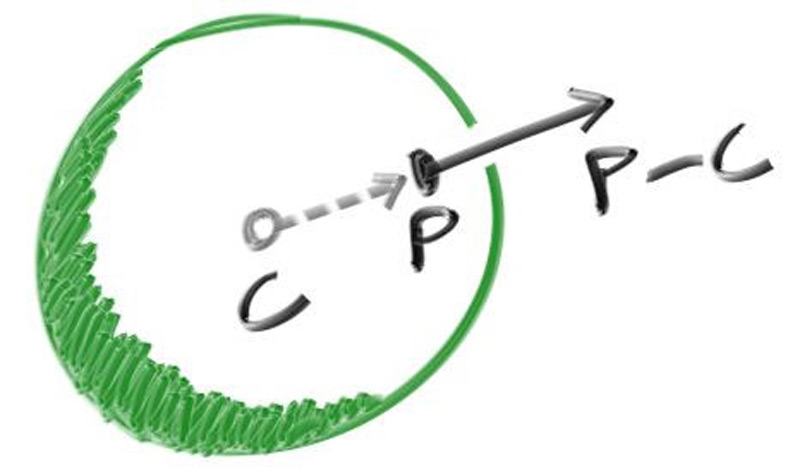

Shading with Surface Normals
First, let’s get ourselves a surface normal so we can shade. This is a vector that is perpendicular to the surface at the point of intersection.
We have a key design decision to make for normal vectors in our code: whether normal vectors will have an arbitrary length, or will be normalized to unit length.
It is tempting to skip the expensive square root operation involved in normalizing the vector, in case it's not needed. In practice, however, there are three important observations. First, if a unit-length normal vector is ever required, then you might as well do it up front once, instead of over and over again “just in case” for every location where unit-length is required. Second, we do require unit-length normal vectors in several places. Third, if you require normal vectors to be unit length, then you can often efficiently generate that vector with an understanding of the specific geometry class, in its constructor, or in the hit() function. For example, sphere normals can be made unit length simply by dividing by the sphere radius, avoiding the square root entirely.
Given all of this, we will adopt the policy that all normal vectors will be of unit length.
For a sphere, the outward normal is in the direction of the hit point minus the center:

Figure 6: Sphere surface-normal geometry
On the earth, this means that the vector from the earth’s center to you points straight up. Let’s throw that into the code now, and shade it. We don’t have any lights or anything yet, so let’s just visualize the normals with a color map. A common trick used for visualizing normals (because it’s easy and somewhat intuitive to assume \( \mathbf{n} \) is a unit length vector — so each component is between \( −1 \) and \( 1 \)) is to map each component to the interval from \( 0 \) to \( 1 \), and then map \( (x, y, z) \) to \( (red, green, blue) \). For the normal, we need the hit point, not just whether we hit or not (which is all we're calculating at the moment). We only have one sphere in the scene, and it's directly in front of the camera, so we won't worry about negative values of \( t \) yet. We'll just assume the closest hit point (smallest \( t \)) is the one that we want. These changes in the code let us compute and visualize \( \mathbf{n} \):
diff --git a/src/main.rs b/src/main.rs
index e3d9091..405ca4b 100644
--- a/src/main.rs
+++ b/src/main.rs
@@ -1,81 +1,82 @@
use code::{
color::{Color, write_color},
ray::Ray,
vec3::{Point3, Vec3, dot, unit_vector},
};
-fn hit_sphere(center: Point3, radius: f64, r: Ray) -> bool {
+fn hit_sphere(center: Point3, radius: f64, r: Ray) -> Option<f64> {
let oc = center - r.origin();
let a = dot(r.direction(), r.direction());
let b = -2.0 * dot(r.direction(), oc);
let c = dot(oc, oc) - radius * radius;
let discriminant = b * b - 4.0 * a * c;
- discriminant >= 0.0
+ (discriminant >= 0.0).then(|| (-b - f64::sqrt(discriminant)) / (2.0 * a))
}
fn ray_color(r: Ray) -> Color {
- if hit_sphere(Point3::new(0.0, 0.0, -1.0), 0.5, r) {
- return Color::new(1.0, 0.0, 0.0);
+ if let Some(t) = hit_sphere(Point3::new(0.0, 0.0, -1.0), 0.5, r) {
+ let n = unit_vector(r.at(t) - Vec3::new(0.0, 0.0, -1.0));
+ return 0.5 * Color::new(n.x() + 1.0, n.y() + 1.0, n.z() + 1.0);
}
let unit_direction = unit_vector(r.direction());
let a = 0.5 * (unit_direction.y() + 1.0);
(1.0 - a) * Color::new(1.0, 1.0, 1.0) + a * Color::new(0.5, 0.7, 1.0)
}
fn main() -> Result<(), Box<dyn std::error::Error>> {
// Image
const ASPECT_RATIO: f64 = 16.0 / 9.0;
const IMAGE_WIDTH: i32 = 400;
// Calculate the image height, and ensure that it's at least 1.
const IMAGE_HEIGHT: i32 = {
let image_height = (IMAGE_WIDTH as f64 / ASPECT_RATIO) as i32;
if image_height < 1 { 1 } else { image_height }
};
// Camera
let focal_length = 1.0;
let viewport_height = 2.0;
let viewport_width = viewport_height * (IMAGE_WIDTH as f64) / (IMAGE_HEIGHT as f64);
let camera_center = Point3::new(0.0, 0.0, 0.0);
// Calculate the vectors across the horizontal and down the vertical viewport edges.
let viewport_u = Vec3::new(viewport_width, 0.0, 0.0);
let viewport_v = Vec3::new(0.0, -viewport_height, 0.0);
// Calculate the horizontal and vertical delta vectors from pixel to pixel.
let pixel_delta_u = viewport_u / IMAGE_WIDTH as f64;
let pixel_delta_v = viewport_v / IMAGE_HEIGHT as f64;
// Calculate the location of the upper left pixel.
let viewport_upper_left =
camera_center - Vec3::new(0.0, 0.0, focal_length) - viewport_u / 2.0 - viewport_v / 2.0;
let pixel00_loc = viewport_upper_left + 0.5 * (pixel_delta_u + pixel_delta_v);
// Render
env_logger::init();
println!("P3");
println!("{IMAGE_WIDTH} {IMAGE_HEIGHT}");
println!("255");
for j in 0..IMAGE_HEIGHT {
log::info!("Scanlines remaining: {}", IMAGE_HEIGHT - j);
for i in 0..IMAGE_WIDTH {
let pixel_center =
pixel00_loc + (i as f64) * pixel_delta_u + (j as f64) * pixel_delta_v;
let ray_direction = pixel_center - camera_center;
let r = Ray::new(camera_center, ray_direction);
let pixel_color = ray_color(r);
write_color(std::io::stdout(), pixel_color)?;
}
}
log::info!("Done.");
Ok(())
}Listing 12: [main.rs] Rendering surface normals on a sphere
And that yields this picture:

Image 4: A sphere colored according to its normal vectors